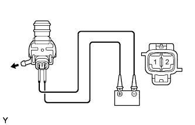
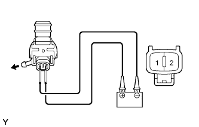

MÔTƠ RỬA KÍNH > KIỂM TRA TRÊN XE |
| 1. KIỂM TRA MÔTƠ RỬA KÍNH CHẮN GIÓ VÀ CỤM BƠM |
|  |
Điền nước rửa kính vào bình nước rửa kính.
Nối cực dương (+) ắc quy vào cực 1 của môtơ gạt nước và bơm, và cực âm (-) ắc quy vào cực 2.
Kiểm tra rằng nước rửa kính phun ra từ vòi phun nước.
| 2. KIỂM TRA MÔTƠ VÀ BƠM RỬA KÍNH HẬU |
|  |
Điền nước rửa kính vào bình nước rửa kính.
Nối cực dương (+) ắc quy vào cực 1 của môtơ gạt nước và bơm, và cực âm (-) ắc quy vào cực 2.
Kiểm tra rằng nước rửa kính phun ra từ vòi phun nước.